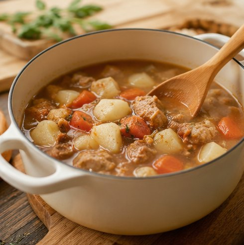
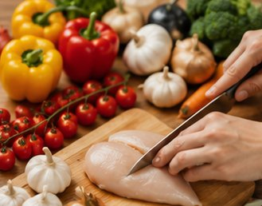
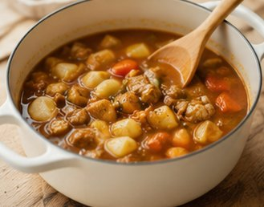

2人前のレシピを急に6人前に。電卓でひとつずつ計算するのは大変…

塩や醤油を単純に倍にすると味が濃くなりすぎてしまう…

g・ml・大さじ・カップが混在していて換算がややこしい…

目分量で作ると余ったり足りなかったり。食材ロスも気になる…
人数変更から栄養計算まで、料理の量調整に必要な機能をまとめました。
元の人数と作りたい人数を入れるだけで、全食材の量を一括で自動計算します。
塩・砂糖など塩分系は80%目安での調整ガイドを表示。味が濃くなりすぎません。
g・ml・個数・大さじ・小さじ・カップなど、さまざまな単位に対応します。
カロリー・タンパク質・塩分など、人数に合わせて栄養価もリスケールします。
よく使う材料セットをテンプレートとして保存。次回からワンタップで呼び出し。
計算結果のSNSシェア・コピー・CSVダウンロード・印刷に対応しています。
3ステップで、誰でもすぐに正確な材料量がわかります。

元の人数と作りたい人数を入力します。よく使う変換はボタンで一発。
材料名・量・単位を入力。複数の食材をまとめて登録できます。

「材料から計算」を押すだけ。全食材の換算量が瞬時に表示されます。

グラフや比率調整の目安を確認。コピー・印刷・シェアで料理に活用。
| 材料名 | 元(2人前) | 換算(8人前) |
|---|---|---|
| 鶏もも肉 | 300g | 1200g |
| 玉ねぎ | 1個 | 4個 |
| 醤油 | 大さじ2 | 大さじ8 |
| 砂糖 | 小さじ1 | 小さじ4 |
塩・醤油などの塩分調味料は単純な4倍だと濃くなりがち。まずは3〜3.5倍から入れて、味見しながら調整するのがおすすめです。
はい、単純な倍率計算を行うため正確です。人数を入力するだけで全食材の量が自動で倍率計算されます。ただし調味料は味見しながらの調整をおすすめします。
塩・醤油などの塩分系調味料は2倍にすると辛くなりすぎる場合があります。本ツールでは80%（1.5〜1.8倍）を目安に表示し、味見しながらの調整を推奨しています。
0.5個のように小数で表示されます。卵黄・卵白で量を分ける、または最小単位を1個として他の材料を合わせるなど、調整が必要な場合があります。
製菓は化学反応に依存するため、単純な倍率では膨らみが変わることがあります。計算値を参考にしつつ、試作・味見で最終調整することをおすすめします。
いいえ、送信されません。本ツールはブラウザ内で全ての計算を行い、入力データはあなたのデバイス内にのみ存在します。プライバシーは完全に保護されています。